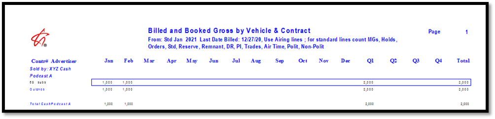
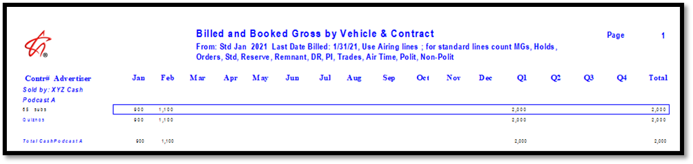
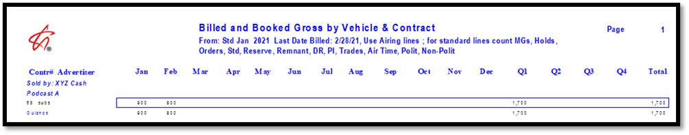
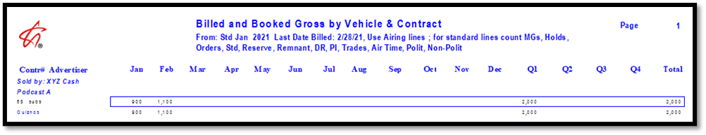
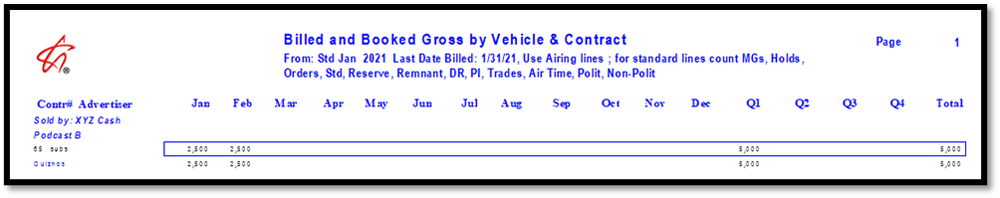
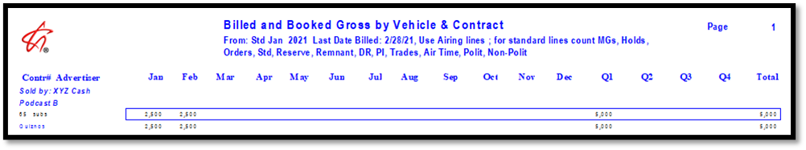

Billed and Booked Report and Podcasts
CPM Lines
For Digital contract lines using the CPM price type, prior to invoicing, the Billed and Booked report standard broadcast version calculates the total cost of the line based on the CPM and impression goal, and averages the total cost across the entire date span of the line to determine the monthly amount shown on the report.
For example, if a CPM line is two months long, has a CPM of 20, and an impression goal of 100,000, the total gross cost of the line would be $2,000, therefore each month on the report would show a monthly gross of $1,000 prior to invoicing.

After a month has been invoiced, the Billed and Booked report pulls data for that month from receivables/history, not from the contract, so it will use the invoice amount for any billed months, and project the monthly revenue from the contract for any remaining unbilled months.
For example, the picture below shows an example of the Billed and Booked report that was run after invoicing January but before invoicing February for a two month CPM line. The total cost of the lines based on the CPM and impression goal was $2,000, and with $900 invoiced in January (due to 45,000 impressions being achieved in that month and a CPM of 20), the remaining unbilled month, February, projects $1,100 from the contract, using the remaining impressions and the line CPM.

Continuing with the example, if the second month under-delivers on the impression goal, and the month is invoiced, the report will pull the invoiced amount from receivables/history, and display that as the month two revenue total. For example, if 40,000 impressions were achieved in month two, using the CPM of 20, it would show $800 gross for month two, as shown in the picture below.

On the other hand, if impressions were over-delivered, for example, an additional 60,000 impressions were achieved in month two, for a total of 105,000 (including 45,000 impressions in month one, for an impression goal of 100,000), when Site Options is set to only invoice up to the impression goal, after invoicing, month two will show a gross of $1,100, as shown in the picture below.

Flat Rate Lines
Flat Rate Ad Server lines essentially bill “as ordered”, with the flat rate cost averaged across each month of the line (for a multi-month line), and the flat rate monthly cost invoiced each month, regardless of the number of impressions delivered for the month.
For example, a flat rate line that runs for two months for a total gross of $5,000 will average out to $2,500 per month (gross).
Prior to running invoices for the first month, the Billed and Booked gross report standard broadcast version will show $2,500 per month for the two month span of the line, projected entirely from the contract. After running invoices for the first month, the report will pull the first month of data from receivables/history, and the second unbilled month from the contract. The report will still show $2,500 per month, as shown in the picture below.

After running invoices for the second month, the report will pull both months from receivables/history, and display $2,500 per month, as shown in the picture below.

Cal Spots
The Billed and Booked Cal Spots report includes digital/ad server lines.
For contracts on the broadcast billing cycle, it gathers all ad server lines that are running for at least one day within the report date range and processes each line. For billed standard months, it uses the invoice amount for that standard month, calculates a daily average using the number of days the line runs for in that standard month, then checks the prior standard broadcast month, and if there are calendar month days from the prior month in the next standard broadcast month, it determines how many days are in that period, multiplies it by the daily average, adjusts the prior month, and subtracts that adjustment amount from the month being processed to get an adjusted calendar month total. If the standard month being calculated ends before the calendar month, it uses the daily average from the next month and applies it to the current month to get the calendar month total for that month. It repeats that process for each month that the line runs for.
For unbilled standard months, it starts by determining how much of the line total cost has not been invoiced, then calculates a daily unbilled average, and uses that unbilled daily average to calculate the calendar month totals for the remaining calendar months, based on how many days are in each calendar month for that line.
Once a single digital line has been fully computed for all months like this, it determines which calendar months are actually being requested by the report parameters, and reports the calendar month values for the requested calendar months.
If the Calendar billing cycle is used, for contracts set to the Calendar billing cycle, each month bills the calendar month amount. The unbilled months are calculated using a daily average for the remaining line cost and the number of calendar days that the line is running for.
Example 1 - unbilled projection:
A digital line has dates 3/27/23-4/2/23 for a contract on the broadcast billing cycle. Broadcast April has not been invoiced yet, so this line is entirely uninvoiced, and it has a total cost of $700. There are 7 days in broadcast April for this line, so it divides the line cost by 7 to get the average of 100. There are five days in calendar March, so it multiplies 5 by the average to get 500 for calendar March to show on the report. For calendar April, it's 2 days times the daily average, for 200 to show on the report.
Example 2 - multi-Calendar month line that has been billed:
A digital line has dates 2/27/23-3/05/23 for a contract on the broadcast billing cycle. Broadcast March has been invoiced for $700. The line runs for 7 days in broadcast March, so it takes the billed amount of $700 and divides it by 7 to get the billed daily average of 100. Broadcast March has 2 days in Calendar February for this line, so to calculate the calendar month February amount, it multiplies the billed daily average by 2, to get 200 for February, which it shows on the report. Broadcast March has 5 days in the March calendar month, so it multiplies the billed daily average by 5 to get 500 for calendar March on the report.